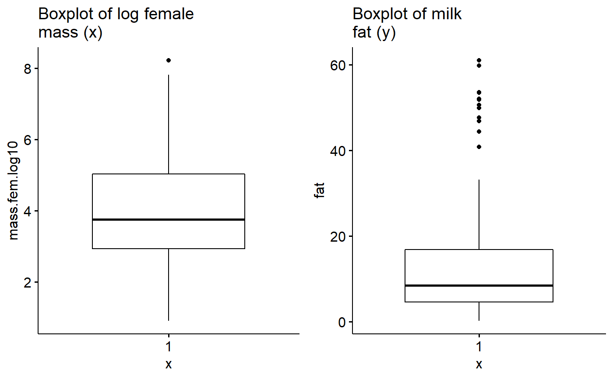
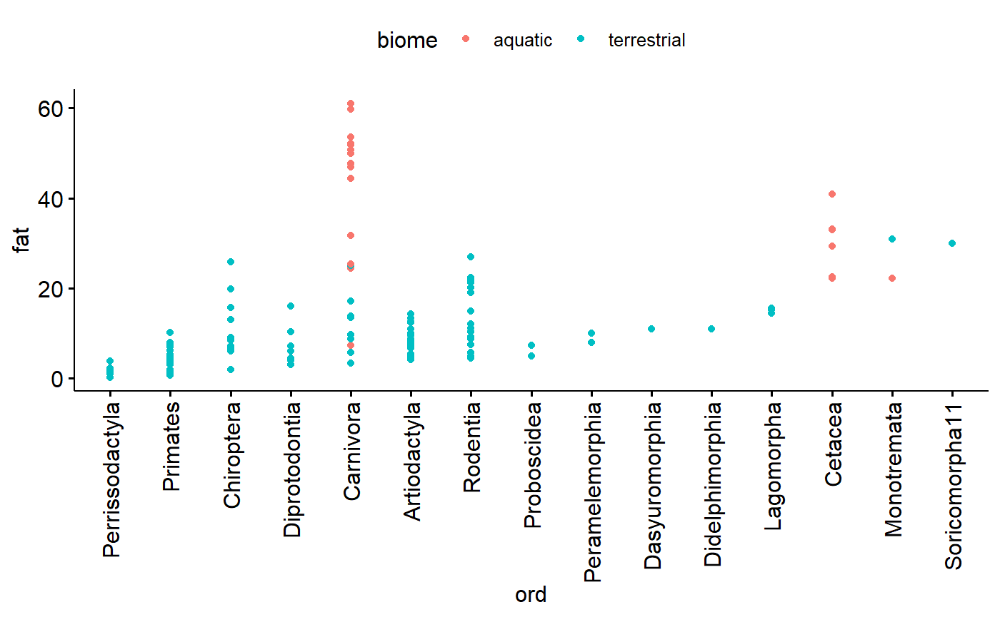
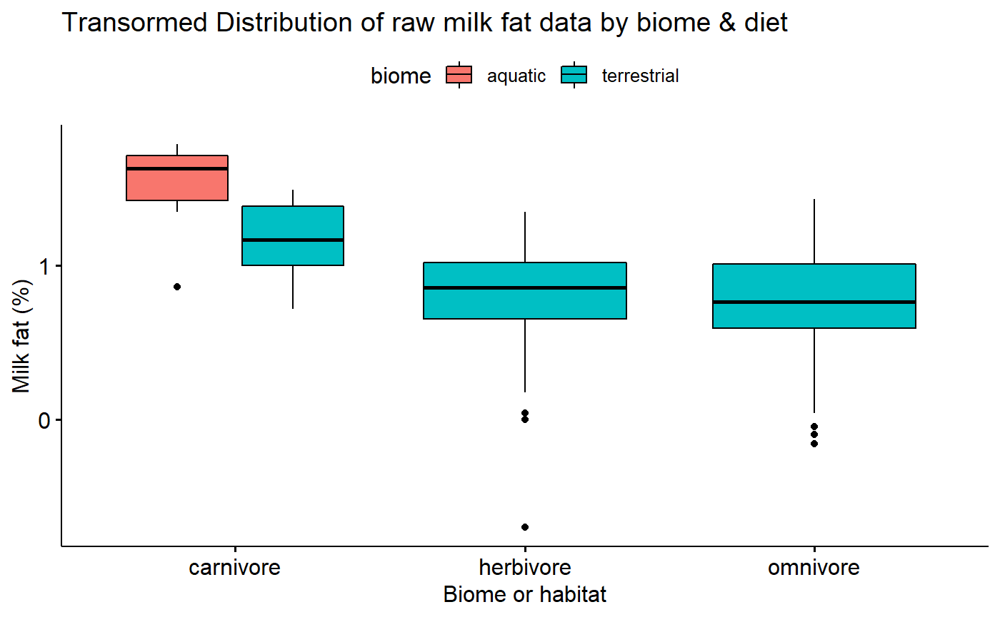
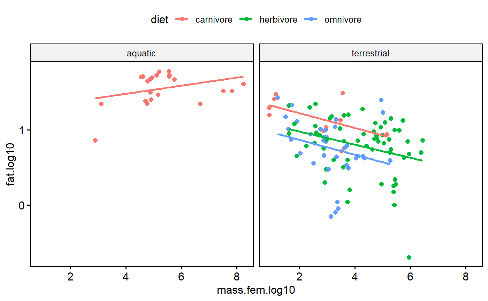
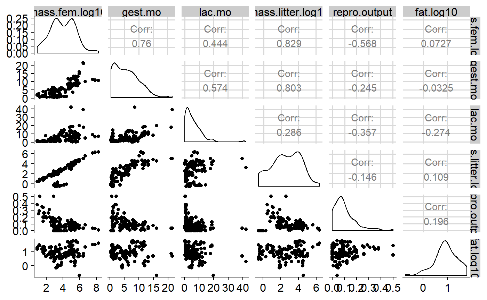
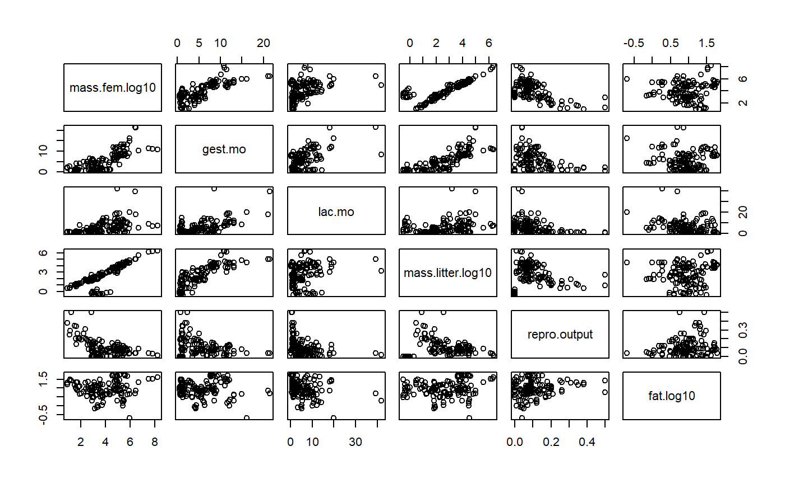

Appendix 4a: Graphical Exploratory Analysis
Nathan Brouwer | brouwern@gmail.com | @lobrowR
2018-11-30
Appendix-4a-Grapical_Exploratory_Analyses.RmdPreliminaries
Load packages
library(dplyr) # for exploratory analyses
#>
#> Attaching package: 'dplyr'
#> The following objects are masked from 'package:stats':
#>
#> filter, lag
#> The following objects are masked from 'package:base':
#>
#> intersect, setdiff, setequal, union
library(ggpubr) # plotting using ggplto2
#> Loading required package: ggplot2
#> Loading required package: magrittr
library(cowplot)
#>
#> Attaching package: 'cowplot'
#> The following object is masked from 'package:ggpubr':
#>
#> get_legend
#> The following object is masked from 'package:ggplot2':
#>
#> ggsave
library(lme4)
#> Loading required package: Matrix
library(arm)
#> Loading required package: MASS
#>
#> Attaching package: 'MASS'
#> The following object is masked from 'package:dplyr':
#>
#> select
#>
#> arm (Version 1.10-1, built: 2018-4-12)
#> Working directory is C:/Users/lisanjie/Documents/1_R/git/mammalsmilkRA/vignettes
library(stringr)
library(bbmle)
#> Loading required package: stats4
#>
#> Attaching package: 'bbmle'
#> The following object is masked from 'package:dplyr':
#>
#> slice
library(plotrix) ##std.error function for SE
#>
#> Attaching package: 'plotrix'
#> The following object is masked from 'package:arm':
#>
#> rescale
library(psych)
#>
#> Attaching package: 'psych'
#> The following object is masked from 'package:plotrix':
#>
#> rescale
#> The following objects are masked from 'package:arm':
#>
#> logit, rescale, sim
#> The following objects are masked from 'package:ggplot2':
#>
#> %+%, alpha
library(here)
#> here() starts at C:/Users/lisanjie/Documents/1_R/git/mammalsmilkRALoad data
(Note: original files is called “skibiel_mammalsmilk.csv” within the mammalsmilk package. The data has been duplicated here but given a new name (“Appendix-2-Analysis-Data_mammalsmilkRA.csv”) to make this a stand-alone analysis compendium)
Load data in R
If you have installed the mammalsmilkRA package the .csv “Appendix-2-Analysis-Data_mammalsmilkRA.csv” will be saved in the mammalsmilkRA directory R created to store package-related files. You can locate where this file is by searching for the file in your file system (eg “File explorer” in Windows) and then either setting its locations as your working dirctory or saving the file to a more convienent locations.
Alternatively, you load it directly from the mammalsmilkRA package; most anlyses aren’t packaged into in a package, so this is a unique short cut I’ve set upt.
data("milk")
#> Warning in data("milk"): data set 'milk' not foundlist.files(here("/inst/extdata"))
#> [1] "_original_files"
#> [2] "analysis_comendium"
#> [3] "Appendix-1-Raw-Data_Skibiel_et_al_2014_mammalsmilk.csv"
#> [4] "Appendix-2-Analysis-Data_mammalsmilkRA.csv"
#> [5] "Appendix-3-Data-dictionary_mammalsmilkRA.xlsx"
file. <- "Appendix-2-Analysis-Data_mammalsmilkRA.csv"
path. <- here::here("/inst/extdata",file.)
milk <- read.csv(path., skip = 3)Check input
head(milk)
#> ord fam spp mass.fem gest.mo
#> 1 Artiodactyla Bovidae Bos frontalis 800000 9.02
#> 2 Artiodactyla Bovidae Capra ibex 53000 5.60
#> 3 Artiodactyla Bovidae Connocheates taurinus taurinus 170500 8.32
#> 4 Artiodactyla Bovidae Connocheates gnou 200000 8.50
#> 5 Artiodactyla Bovidae Damaliscus pygargus phillipsi 61000 8.00
#> 6 Artiodactyla Bovidae Gazella dorcas 20600 4.74
#> lac.mo mass.litter repro.output dev.birth diet arid biome N
#> 1 4.5 26949 0.03 3 herbivore no terrestrial 4+
#> 2 7.5 3489 0.07 3 herbivore no terrestrial 24
#> 3 8.0 17717 0.10 3 herbivore yes terrestrial 5
#> 4 7.5 11110 0.06 3 herbivore yes terrestrial 3
#> 5 4.0 6500 0.11 3 herbivore yes terrestrial 4
#> 6 2.8 1771 0.09 3 herbivore yes terrestrial 16
#> fat gest.month lacat.mo prot sugar energy
#> 1 7.0 9.02 4.5 6.3 5.2 1.21
#> 2 12.4 5.60 7.5 5.7 NA NA
#> 3 7.5 8.32 8.0 4.1 5.3 1.13
#> 4 5.5 8.50 7.5 4.3 4.1 0.91
#> 5 8.6 8.00 4.0 5.6 4.9 1.31
#> 6 8.8 4.74 2.8 8.8 NA NA
tail(milk)
#> ord fam spp mass.fem gest.mo
#> 125 Rodentia Muridae Pseudomys australis 65 1.02
#> 126 Rodentia Muridae Rattus norvegicus 253 0.71
#> 127 Rodentia Octodontidae Octodon degus 235 2.96
#> 128 Rodentia Scuiridae Tamias amoenus 53 0.98
#> 129 Rodentia Scuiridae Urocitellus columbianus 406 0.84
#> 130 Soricomorpha11 Soricidae Crocidura russula 14 0.97
#> lac.mo mass.litter repro.output dev.birth diet arid biome
#> 125 0.9 13 0.20 0 herbivore yes terrestrial
#> 126 0.8 51 0.20 0 omnivore no terrestrial
#> 127 1.2 74 0.31 3 herbivore yes terrestrial
#> 128 1.5 14 0.26 0 omnivore no terrestrial
#> 129 1.0 32 0.08 0 herbivore no terrestrial
#> 130 0.8 4 0.29 0 carnivore no terrestrial
#> N fat gest.month lacat.mo prot sugar energy
#> 125 7-Jun 12.1 1.02 0.9 6.4 3.6 1.62
#> 126 18-Mar 8.8 0.71 0.8 8.1 3.8 1.43
#> 127 7 20.1 2.96 1.2 4.4 2.7 2.20
#> 128 11 21.7 0.98 1.5 8.1 4.3 2.62
#> 129 26 9.2 0.84 1.0 10.7 3.4 1.60
#> 130 3 30.0 0.97 0.8 9.4 3.0 3.40
summary(milk)
#> ord fam spp
#> Artiodactyla :23 Bovidae :13 Acomys cahirinus : 1
#> Carnivora :23 Cercopithecidae: 8 Alces alces : 1
#> Primates :22 Cervidae : 7 Aloutta palliata : 1
#> Rodentia :17 Muridae : 7 Aloutta seniculus : 1
#> Chiroptera :10 Otariidae : 7 Arctocephalus australis: 1
#> Diprotodontia:10 Phocidae : 7 Arctocephalus gazella : 1
#> (Other) :25 (Other) :81 (Other) :124
#> mass.fem gest.mo lac.mo mass.litter
#> Min. : 8 Min. : 0.400 Min. : 0.300 Min. : 0.3
#> 1st Qu.: 857 1st Qu.: 1.405 1st Qu.: 1.625 1st Qu.: 42.0
#> Median : 5716 Median : 5.000 Median : 4.500 Median : 423.5
#> Mean : 2229475 Mean : 5.624 Mean : 6.092 Mean : 52563.8
#> 3rd Qu.: 107500 3rd Qu.: 8.365 3rd Qu.: 8.225 3rd Qu.: 7038.2
#> Max. :170000000 Max. :21.460 Max. :42.000 Max. :2272500.0
#>
#> repro.output dev.birth diet arid
#> Min. :0.00003 Min. :0.000 carnivore:32 no :91
#> 1st Qu.:0.04000 1st Qu.:1.000 herbivore:61 yes:39
#> Median :0.08000 Median :2.000 omnivore :37
#> Mean :0.10374 Mean :1.831
#> 3rd Qu.:0.13750 3rd Qu.:3.000
#> Max. :0.50000 Max. :4.000
#>
#> biome N fat gest.month
#> aquatic : 22 4 :13 Min. : 0.20 Min. : 0.400
#> terrestrial:108 3 :11 1st Qu.: 4.65 1st Qu.: 1.405
#> 6 :10 Median : 8.55 Median : 5.000
#> 7 : 9 Mean :13.99 Mean : 5.624
#> 5 : 8 3rd Qu.:16.82 3rd Qu.: 8.365
#> 24 : 5 Max. :61.10 Max. :21.460
#> (Other):74
#> lacat.mo prot sugar energy
#> Min. : 0.300 Min. : 1.100 Min. : 0.02 Min. :0.360
#> 1st Qu.: 1.625 1st Qu.: 4.125 1st Qu.: 3.00 1st Qu.:0.965
#> Median : 4.500 Median : 6.750 Median : 4.70 Median :1.365
#> Mean : 6.092 Mean : 6.673 Mean : 4.94 Mean :1.680
#> 3rd Qu.: 8.225 3rd Qu.: 9.200 3rd Qu.: 6.60 3rd Qu.:2.045
#> Max. :42.000 Max. :15.800 Max. :14.00 Max. :5.890
#> NA's :16 NA's :16Still some cleaning to do?
Graphical Exploratory Analsyes
I follow the protocol outlined by Zuur et al 2010 A protocol for data exploration to avoid common statistical problems. Methods in Ecology & Evolution 1:3-14.
Data exploration 1: Outlier exploration
Data exploration 1a: Outlier exploration with boxplots
In this analysis my main variables are
- Predictor (x): Body mass of mothers (mass.fem)
- Response (y): % milk fat of milk (fat)
I will look at each one with a boxplot. If I am not plotting by a grouping variable I don’t need an ‘x =’ in ggboxplot().
I will make each plot and store it in an R object, then make a side by side plot using cowplot::plot_grid()
1st, make the graphs
gg.mass <- ggboxplot(data = milk,
y = "mass.fem",
main = "Boxplot of female\nmass (x)")
gg.fat <- ggboxplot(data = milk,
y = "fat",
main = "Boxplot of milk\nfat (y)")Then plot them
plot_grid(gg.mass, gg.fat)
There appear to be outliers in material mass. I will see if log transformation helps with this.
milk$fat.log10 <- log10(milk$fat)
milk$mass.fem.log10 <- log10(milk$mass.fem)
milk$fat.logit <- arm::logit(milk$fat/100)Make log plot
gg.mass.log <- ggboxplot(data = milk,
y = "mass.fem.log10",
main = "Boxplot of log female\nmass (x)")Plot log(mass) and fat
plot_grid(gg.mass.log, gg.fat)
Data exploration 1b: Outlier exploration with dotplots
The (Cleveland) dotplot (or dotchart) can refer to several things. For data exploration and diagnostics purposes, a Cleveland dotplot plots a numeric value (x or y) against an index value. The index value can be
- the order the observation falls in the data (1 = 1st observation)
- the rank of the observation within the data (1 = smallest observation)
In ggpubr, the ggdotchart() function takes the numeric value of interest as the y variable. For the x variable , ggdotchart can take a numeric variable or a categorical variable. ggdotchart() then sorts the y-variable from the smallest to the largest value and plots it against the x-axis, which is treated as a categorical variable (even if its numeric). This is somewhat different that what the base R dotchart() function does which is featured in the Zuur et al 2010 paper.
For the x variable, what I think works well is to give ggdotchart() either
- A categorical variable with many levels
- A index of the order of
Make an index
milk$index <- 1:nrow(milk)Dot plot for response variable (y)
Plot the dot chart based on index value. ggpubr allows us to color code by biome, which is nice. Overall what we are looking for is a big jump between data points, indicating an unusual observation the could be due to a data entry error.
ggdotchart(data = milk,
y = "fat",
x = "index",
color = "biome")We can also facet by diet
ggdotchart(data = milk,
y = "fat",
x = "index",
color = "biome",
facet.by = "diet")Plot the dot chart based on species. This is ugly because the species names are so long.
ggdotchart(data = milk,
y = "fat",
x = "spp",
color = "biome")There are multiple species per family; this makes for an interesting perspective on how size correlates with family because there are now multiple values along the y axis for each value along the x axis.
ggdotchart(data = milk,
y = "fat",
x = "fam",
color = "biome")
Similar for family, except more dots. Note that Carnivore now stands out as have a relatively large amount of variation
ggdotchart(data = milk,
y = "fat",
x = "ord",
color = "biome")
Dotplot for predictor variable (x)
In my carnivores there are data points which stick out a lot. This could be concerning. However, two things
1.There is a smooth swoop up; that is, highest point is part of an increasing trend.
1. I know these data are the masses of mammals, which vary from mice to whales.
ggdotchart(data = milk,
y = "mass.fem",
x = "index",
color = "biome",
facet.by = "diet")So, this dotplot isn’t concerning, but I should double check the high values anyway. It wouldn’t hurt to log transform and check again after that.
Data exploration 2: Homogeneity of Y using Conditional boxplot
A conditional boxplot is a boxplot of the data split apart by relevant groups. The distribution of the data (the box plot) is therefore conditional on or dependent on the grouping variable. In mathy terms we might write “distribution(y | group)” where “|” means “depends on.” (this isn’t a real thing, just supposed to be evocative of probability statement like Pr(Ho|data)).
The homogeneity of the y variable is an assumption of linear models - and an important one. (Recall that “homogeneity” refers to homogeneity of variance aka homoskedasticity) In contrast, linear models don’t assume anything about the distribution of the x variable. Its a good idea to make boxplots of your x (predictor) variables too, though, just to make sure you are familiar with the data and to make sure there isn’t anything goofy.
When things are not homogeneous (= heterskedastic) transformation can help fix things. In what follows I will explore the x and y variables with boxplot and try out a log transformation to fix things.
Untransformed milk fat data conditional boxplot
Data is not skewed, but:
- Variance appears to different between groups
- Percentage data is necessarily bounded between 0 and 100% making it inherently non-normal
ggboxplot(data = milk,
y = "fat",
x = "diet",
fill = "biome",
xlab = "Biome or habitat",
ylab = "Milk fat (%)",
title = "Distribution of raw milk fat data by biome & diet")Transformed data conditional boxplot
Transformation stabilizes variance.
ggboxplot(data = milk,
y = "fat.log10",
x = "diet",
fill = "biome",
xlab = "Biome or habitat",
ylab = "Milk fat (%)",
title = "Transormed Distribution of raw milk fat data by biome & diet")
X variable exploration: Female size conditional boxplots
We don’t assume that the X variable is homogenous, but its good to explore the data using conditional boxplots also.
Data exploration 3: Normality
“In linear regression, we actually assume normality of all the replicate observations at a particular covriate value … However, normality of the raw data implies normality of the residuals” (Zuur et al 2010)
The normality assumption is generally best dealt with after fitting a model. However, you can start to get a sense for it by plotting histograms (And to some extent boxplot) of the data split up by major grouping variables (“conditional boxplots” using Zuur’s nomenclature). This conditioning can be done by using ggplot’s faceting ability.
If you are doing a t-test or ANOVA, these histograms of the raw data conditional by group will be equivalent to plots of the residuals after fitting the model. For ANCOVA and multiple regression, however, you need to actually fit the model.
Note that normality applies to the y variable. It never hurts to explore the x variables too, though.
I already know that a log transformation is needed, so I’ll skip with the raw data and just look at the log10 values
I will be doing regression and so I need to fit a model. However, I do have major categorical variables to consider, so I’ll make a histogram to see what it looks like.
gghistogram(data = milk,
x = "mass.fem.log10",
facet.by = "diet")
#> Warning: Using `bins = 30` by default. Pick better value with the argument
#> `bins`.Even after a log transformation the data aren’t super normal. However, further conditioning on biome could make this better; also, as I’ve already said, I need to actually fit my regression model and look at the residuals to really pass judgement. Moreover, I don’t get hung up on normality unless things are really really skewed.
I could add biome in indirectly by making a combined variable I“ll call group”
milk$group <- paste(milk$biome, milk$diet)
gghistogram(data = milk,
x = "mass.fem.log10",
facet.by = "group",
fill = "diet")
#> Warning: Using `bins = 30` by default. Pick better value with the argument
#> `bins`.This reveals that terrestrial carnivores are kinda skewed. However, with few data points its hard to tell. Overall these data are that normal, but see the caveats above as to why I am not in the least concerned at this stage.
Data exploration with Scatter plots
A scatter plot of predictors versus response variables is also key to data exploration, as well as final data presentation
Scatter plot of raw data
I already know that log transformation are probably key to working with this data, but its interesting to look at the raw data. We can see how the far right data point exerts leverage on the regression line.
ggscatter(data = milk,
y = "fat",
x = "mass.fem",
add = "reg.line",
color = "diet")Scatter plot of transormed data
Log transformation deals with high leverage values (extreme x axis values due to large size of the animals), pulls in potential y axis outliers, improves normality, and stabilizes variance within groups. Awesome!
One problem remains. This scatter plot indicates that the variance within each major group appears to increase as size increase. This occurs even in the log-transformed data. This is major issue that can only be addressed through the use of generalized least squares (GLS) and/or random effects. See the following paper for more details
Cleasby & Nakagawa. 2011. Neglected biological patterns in the residuals. Behavioral Ecology and Sociobiology.
ggscatter(data = milk,
y = "fat.log10",
x = "mass.fem.log10",
add = "reg.line",
color = "diet",
facet.by = "biome")
Other Scatter plot elements
Rugs
Add a “rug” to help with visualizing the data distributions.
ggscatter(data = milk,
y = "fat.log10",
x = "mass.fem.log10",
add = "reg.line",
color = "diet",
facet.by = "biome",
rug = TRUE)Add mean point and scatter plot ellipse
Add a point for the bi-variate mean of the data (joint mean along both axes). Note how it falls on the regression line.
Also add a “data ellipse”
“The data ellipse is typically used to add a visual summary to a scatterplot, indicating the means, standard deviations, correlation and slope of the regression line for two variables.” (Friendly et al 2013 Elliptical Insights: Understanding Statistical Methods through Elliptical Geometry)
The ellipse is joint 95% confidence interval in both dimensions. You could calculate the mean of the x variable and calculate a confidence interval around, then calculate the mean of the y variable and a 95% CI. The ellipse basically simultaneously merges these two things.
ggscatter(data = milk,
y = "fat.log10",
x = "mass.fem.log10",
add = "reg.line",
color = "diet",
facet.by = "group",
mean.point = TRUE,
ellipse = TRUE,
ellipse.border.remove = TRUE)Data exploration 4: Excess zeros
When you have count data you frequently use Poisson regression. Like linear regression, Poisson regression makes assumptions about the distribution of the data. Count data with lots of zeros violates these assumptions.
Data exploration: Collinearity
When predictor variables are highly correlated with each other this causes problems with estimating and making inference with regression.
My analysis focuses just on female mass as a numeric predictor. The original analysis considered a number of other predictors, but did not explicitly discuss collinearity issues.
Table of correlations
One way of getting a sense for collinearity is to look at a table of correlation coefficients for you predictors. I’ll also include the response variable fat.
milk$mass.litter.log10 <- log10(milk$mass.litter)
variables. <- c("mass.fem.log10", "gest.mo", "lac.mo", "mass.litter.log10", "repro.output", "fat.log10")
correlation.table <- cor(milk[,variables.])
# a little trick to remove the lower part
correlation.table[lower.tri(correlation.table)] <- NA
round(correlation.table,3)
#> mass.fem.log10 gest.mo lac.mo mass.litter.log10
#> mass.fem.log10 1 0.76 0.444 0.829
#> gest.mo NA 1.00 0.574 0.803
#> lac.mo NA NA 1.000 0.286
#> mass.litter.log10 NA NA NA 1.000
#> repro.output NA NA NA NA
#> fat.log10 NA NA NA NA
#> repro.output fat.log10
#> mass.fem.log10 -0.568 0.073
#> gest.mo -0.245 -0.032
#> lac.mo -0.357 -0.274
#> mass.litter.log10 -0.146 0.109
#> repro.output 1.000 0.196
#> fat.log10 NA 1.000You can get p-value for you correlations using corr.test from the psych package
psych::corr.test(milk[,variables.])
#> Call:psych::corr.test(x = milk[, variables.])
#> Correlation matrix
#> mass.fem.log10 gest.mo lac.mo mass.litter.log10
#> mass.fem.log10 1.00 0.76 0.44 0.83
#> gest.mo 0.76 1.00 0.57 0.80
#> lac.mo 0.44 0.57 1.00 0.29
#> mass.litter.log10 0.83 0.80 0.29 1.00
#> repro.output -0.57 -0.25 -0.36 -0.15
#> fat.log10 0.07 -0.03 -0.27 0.11
#> repro.output fat.log10
#> mass.fem.log10 -0.57 0.07
#> gest.mo -0.25 -0.03
#> lac.mo -0.36 -0.27
#> mass.litter.log10 -0.15 0.11
#> repro.output 1.00 0.20
#> fat.log10 0.20 1.00
#> Sample Size
#> [1] 130
#> Probability values (Entries above the diagonal are adjusted for multiple tests.)
#> mass.fem.log10 gest.mo lac.mo mass.litter.log10
#> mass.fem.log10 0.00 0.00 0 0.00
#> gest.mo 0.00 0.00 0 0.00
#> lac.mo 0.00 0.00 0 0.01
#> mass.litter.log10 0.00 0.00 0 0.00
#> repro.output 0.00 0.00 0 0.10
#> fat.log10 0.41 0.71 0 0.22
#> repro.output fat.log10
#> mass.fem.log10 0.00 0.82
#> gest.mo 0.03 0.82
#> lac.mo 0.00 0.01
#> mass.litter.log10 0.39 0.65
#> repro.output 0.00 0.13
#> fat.log10 0.03 0.00
#>
#> To see confidence intervals of the correlations, print with the short=FALSE optionNote that variables are perfectly correlated with each other, so the diagonal elements are all 1. High positive or negative values indicate values that are highly correlated and which will pose problems if both included in regression. Collinearity can be subtle, though, so full diagnostics using variance inflation factors need to be use once the model is fit.
We can get a visual representation of this with GGally::ggpairs, which gives us a sactterplot matrix, histograms for each variable, and the correlation coeffeictions.
GGally::ggpairs(milk[,variables.])
GGally::ggpairs is pretty slow; old fashioned pairs() is faster.
pairs(milk[,variables.])
You can add correlations and histograms if you add some functions. See the help file ?pairs for details.
#function form help file for hist
panel.hist <- function(x, ...)
{
usr <- par("usr"); on.exit(par(usr))
par(usr = c(usr[1:2], 0, 1.5) )
h <- hist(x, plot = FALSE)
breaks <- h$breaks; nB <- length(breaks)
y <- h$counts; y <- y/max(y)
rect(breaks[-nB], 0, breaks[-1], y, col = "cyan", ...)
}
#function form help file for correlation
panel.cor <- function(x, y, digits = 2, prefix = "", cex.cor, ...)
{
usr <- par("usr"); on.exit(par(usr))
par(usr = c(0, 1, 0, 1))
r <- abs(cor(x, y))
txt <- format(c(r, 0.123456789), digits = digits)[1]
txt <- paste0(prefix, txt)
if(missing(cex.cor)) cex.cor <- 0.8/strwidth(txt)
text(0.5, 0.5, txt, cex = cex.cor * r)
}
# plot it
pairs(milk[,variables.],
diag.panel = panel.hist,
lower.panel = panel.smooth,
upper.panel = panel.cor)For information on variance inflation factors see: Graham 2003. Confronting multicollinearity in ecological multiple regression. Ecology.
For more on collienarity see: Freckleton. 2011. Dealing with collinearity in behavioral and ecological data: model averaging and the problems of measurement error. Behavioral Ecology and Sociobiology. https://link.springer.com/article/10.1007/s00265-010-1045-6
Data exploration 6: Relationship between y & x
We’ve already looked a scatterplot of the x versus y variable and scatterplot matrix.
One thing that hasn’t been emphasized is that ggscatter() non-linear “smoothers” using add = “loess”. This can be useful for see if there non-linear relationships.
milk$lacat.mo.log10 <- log10(milk$lacat.mo)
ggscatter(data = milk,
y = "fat.log10",
x = "lacat.mo.log10",
add = "loess")Data exploration 7: Should we consider interactions?
When interactions occur, relationships between two variables depend on a third. For example, scatterplots coded by color and/or faceted used above indicate that the slope of fat vs body size is positive for aquatic carnivores but negative for other groups.
Data exploration 8: Are observations of the response variable independent?
When data are collected as part of a time series, repeated measures on the same thing, or from adjacent fixed points in space there is the potential for autocorrelation patterns. This is not applicable for the mammals milk dataset.
The data do have issues with phylogenetic structure. This would be best dealt with using phylogenetic reression methods; I don’t have the phylogeny handy so I will use the coarse-level clustering by Order, Family and Genus to approximate this.
Numeric data summaries
It can be very useful to generate numeric data summaries to help you and readers understand the data. This is not emphasized by Zuur
Table of means & SDs
Mass by diet group
milk %>%
group_by(diet) %>%
summarize(mass.mean = mean(mass.fem),
mass.sd = sd(mass.fem),
mass.n = n()
)
#> # A tibble: 3 x 4
#> diet mass.mean mass.sd mass.n
#> <fct> <dbl> <dbl> <int>
#> 1 carnivore 8646393. 32150168. 32
#> 2 herbivore 207403. 492666. 61
#> 3 omnivore 13396. 36423. 37Milk fat by diet group
These data appear in Figure 2a of the original publication
milk %>%
group_by(diet) %>%
summarize(fat.mean = mean(fat),
fat.sd = sd(fat),
fat.SE = plotrix::std.error(fat),
fat.n = n())
#> # A tibble: 3 x 5
#> diet fat.mean fat.sd fat.SE fat.n
#> <fct> <dbl> <dbl> <dbl> <int>
#> 1 carnivore 32.3 16.8 2.96 32
#> 2 herbivore 8.06 5.19 0.664 61
#> 3 omnivore 7.90 6.45 1.06 37Data exploration summary
These data require transformation to meet the assumptions of linear regression. The response (fat) appears to have heterogeneous variances between major groups (eg diet categories) and also since its a percentage is inherently non-normal. Log transformation, as done in the original paper, improves the variance and normality. A logit transformation might be more appropriate because it it percentage data.
The major x variable, female body size, has several outliers due to the broad ranges of body sizes of the organisms. Log transformation improves this.